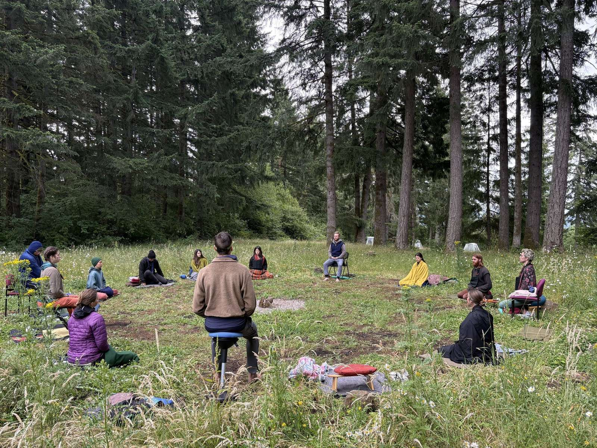
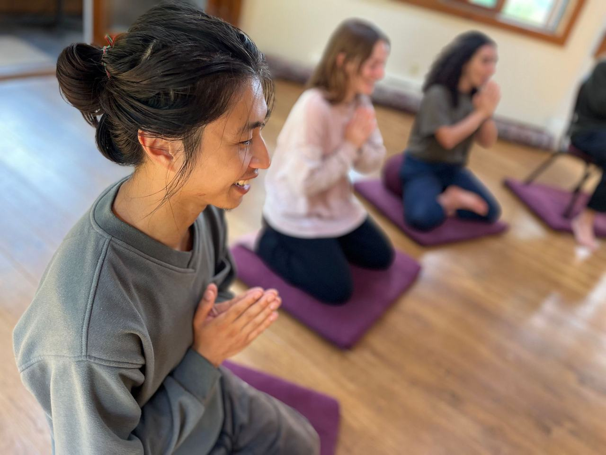
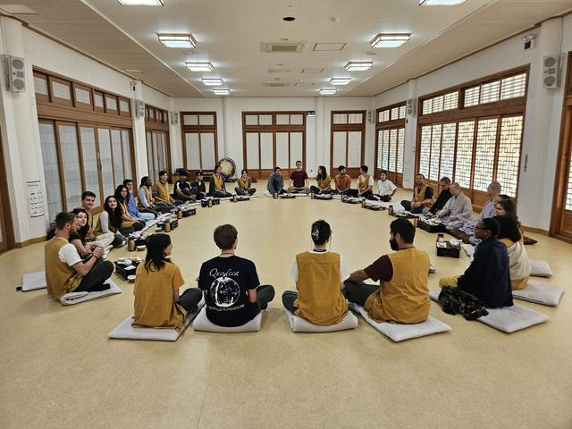
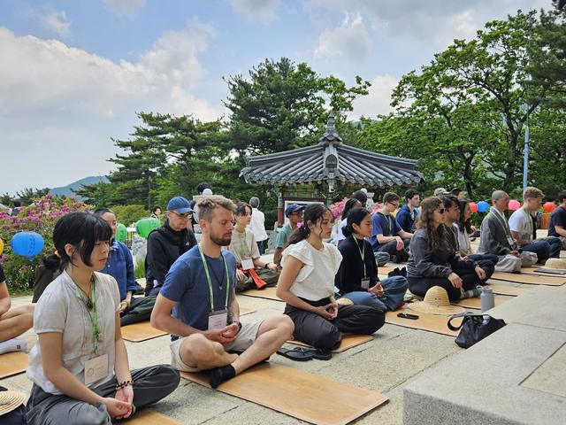
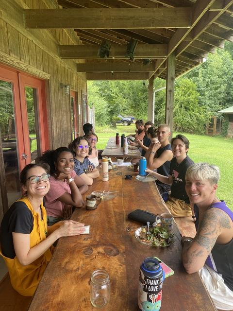
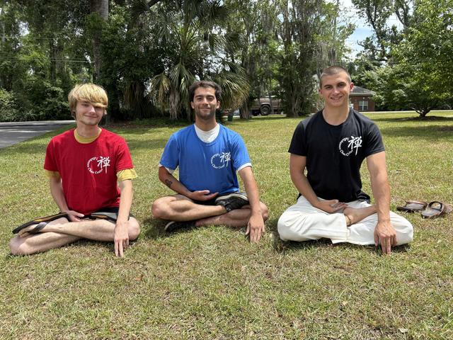
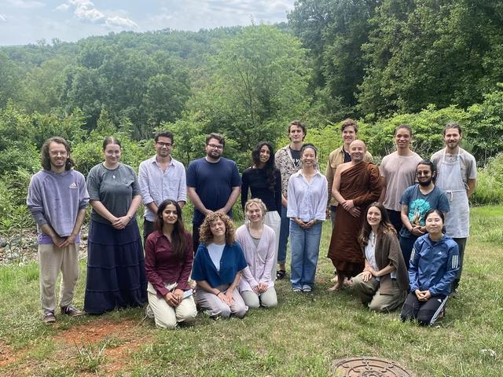
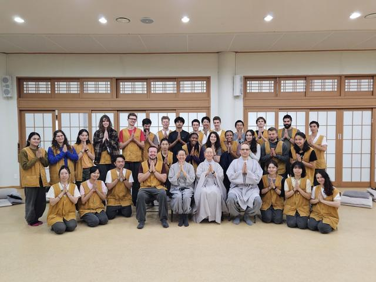

Opening Buddhist Traditions to the Next Generation
We connect young adult practitioners aged 18-35 with authorized teachers and practice centers across Buddhist lineages, helping them find a style of practice that resonates with them. Through our multi-day and single-day retreats, online workshops, and monastic advising, we provide a welcoming entry point into Buddhism for young meditators. Everything we do is offered by-donation.
Introducing Young Adults to Deep Buddhist Practice
Dharma Gates is a 501(c)(3) nonprofit run by young adults, for young adults. We organize multi-day meditation retreats, daylong programs, and advising for young practitioners considering monastic life. Our partners include authorized teachers and centers across Buddhist lineages, so participants can find the tradition that fits them. Every program is offered on a donation basis, so cost is never the reason a young person can't attend.
For the photo version (switcher: Mission, Photo), DG can pick a group photo with Change photo.

Retreats & Events
All Retreats →All of our offerings are donation-based. Learn about our dana policy here.
Rows come from Retreat Guru: DG enters a program there once and it shows here.
- Loading upcoming retreats…
Our Three Pillars
DG to decide where each pillar links, if anywhere.
Deep Practice
Dharma Gates offers young adults ages 18–35 immersive, introductory meditation retreats in a range of Buddhist traditions. Every teacher we work with is highly experienced and authorized to teach within their lineage, so newcomers can begin deep practice with guidance they can trust.


Sangha
Sangha is the Buddhist word for a community of practitioners. The Buddha taught that good friends, companions, and associates are the whole of the spiritual life, and Dharma Gates builds young adult sangha with that teaching in mind. Between in-person retreats, we host retreat reunion calls, single-day events, informal meetups, and a community WhatsApp group so that practitioners stay connected.


Dana
Dana is the Pali word for generosity. Dharma Gates offers every retreat and event on a dana basis, with no required fee, so that young adults can attend regardless of income.


Our Impact Since 2019
Participant Experiences
“I feel like a layer of crust has started to slough off what felt like my corroded heart. I see that my heart is still there, shining, full of potential, that I can still feel deeply, still be genuinely and pleasantly surprised by life.”
“In the most cliché phrase - it changed my life, but maybe not even that. It brought me home to who I've always been & who I will always be. This retreat brought me home.“
“This retreat reminded me of the beauty and awe of life and the effectiveness of dharma practice as a tool to understand that.”
“I didn't have an actual baseline understanding of what it meant to meditate, not truly. This retreat has really helped to bolster a sense of deep understanding. There is great value in deep meditation practice.”
“My first meditation retreat experience in community with other young people - I found it refreshing, inspiring, invigorating and hopeful.”
“Truly magical. Historically, I have practiced meditation solo, I never knew how powerful it could be to sit with a community and how close I could feel with others through silence.”
“I feel very grateful to have recieved this opportunity that would not have been accessible for me if there were a cost. I can and am honored to take the lessons I received and now go out and share them with those I serve.”
I never even thought about retreats before this because of how expensive they were. This changed my life, and will continue to change it.”
These eight quotes come word for word from DG’s Testimonials page. Lyndsey is sending more from DG’s own bank.
More About Dharma Gates
What does Dharma Gates do?
Dharma Gates offers donation-based Buddhist meditation retreats, classes, and events to young adults 18-35. Dharma Gates partners with authorized teachers and facilitators from a wide breadth of Buddhist traditions to allow for a diversity of perspectives. Dharma Gates currently offers around 13 multi-day retreats per year around the USA and several immersive daylong events annually. Click here to check out upcoming retreats and offerings!
Why does Dharma Gates offer retreats and programs exclusively for young adults?
Dharma Gates believes in creating the most welcoming environment possible to invite young adults into deep practice. That means designing spaces where young people can practice among peers who share similar life questions and concerns as them.
How much does a Dharma Gates retreat cost?
All meditation retreats run by Dharma Gates are entirely donation-based, with no required fee. The mission of Dharma Gates is to create financially-accessible, high quality meditation offerings for young adults 18-35. All retreats and programs by Dharma Gates are offered by dana, which is a Pali word for generosity. For more information about our dana-culture, click here.
Is Dharma Gates affiliated with a particular teacher, lineage, or tradition?
No, Dharma Gates is a Buddhist organization, but is not affiliated with one particular teacher, lineage, or specific Buddhist tradition. The Advisory Board of Dharma Gates is comprised of teachers from a number of different branches of Buddhism, and meditation retreats are offered within a variety of Buddhist styles and lineages to allow our participants to discover what works best for them.
Do I need to be Buddhist to go on a meditation retreat with Dharma Gates?
Absolutely not! Although all Dharma Gates retreats are run by Buddhist teachers, participants do not need to identify as Buddhist to attend retreat. Dharma Gates welcomes young adult practitioners from all backgrounds and walks of life.
I’ve never attended a meditation retreat before. What’s it like?
Every retreat Dharma Gates offers is unique, and varies depending on the teacher, their tradition, and the intention of that particular program. But here are common threads between all Dharma Gates meditation retreats that one can expect to experience:
- A warm and friendly peer-led environment. Dharma Gates retreat managers are fellow young adult practitioners who are experienced in facilitation and are there to help you feel safe and comfortable.
- A schedule to follow that includes elements like meditation periods, talks given by the teacher, meal times, cleaning periods, and break times. Schedules are posted around the venue so you know where to be, and when.
- Full-time silence or partial silence. Many Dharma Gates retreats are held in “noble silence”, which means participants do not speak unless they’re prompted to by the teacher in a Q&A or 1-on-1 interview, or when it’s necessary to accomplish a task (i.e. asking for instructions when helping in the kitchen). This supports participants to go deeper into practice, and allows them to be free of some of the relational conventions and distractions of everyday life.
- Taking a break from tech use. Retreat managers invite participants to hand in their phones at the beginning of retreats. Phones, laptops, and other connective devices are not allowed to be used during retreat times. Retreat managers will have phone access throughout retreats in case of emergencies, and emergency contact numbers will be provided so that participants can give them to loved ones.
- Lots of meditating! Depending on the type of retreat, participants will be in meditation anywhere between three and eight hours per day. Often meditation is seated, but sometimes teachers instruct participants in walking meditation, standing meditation, or laying down meditation. Chairs and meditation props may be used for support with seated practice.
- Delicious vegan meals. Dharma Gates works with cooks who nourish retreat participants with freshly-made plant-based meals, with a focus on local and organic ingredients. Retreat cooks are able to accommodate most dietary allergies with enough advance notice.
- Leaving feeling more at peace within your own mind, more loving toward others and the world around you, and more attuned to your environment. These aren’t lofty aspirations, they’re just what usually happens! Retreat offers us a wonderful opportunity to transform our relationship to life.